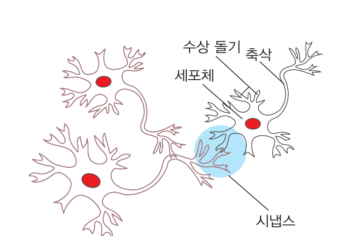
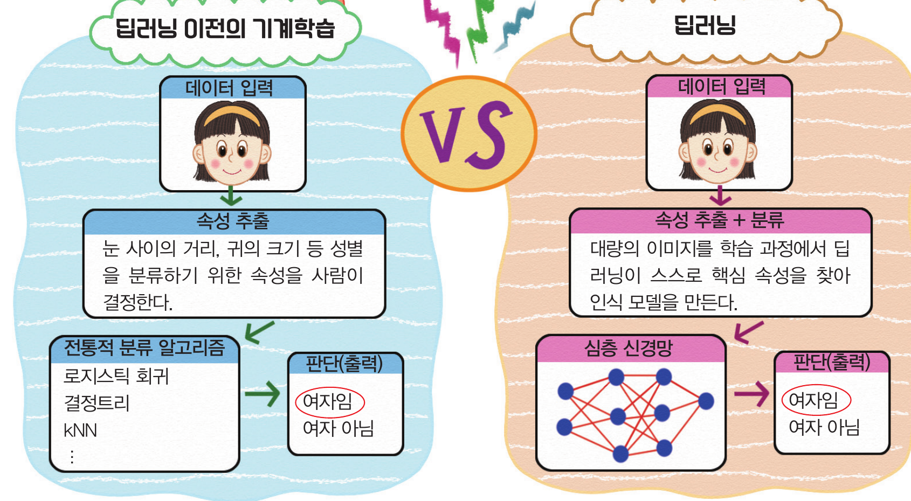
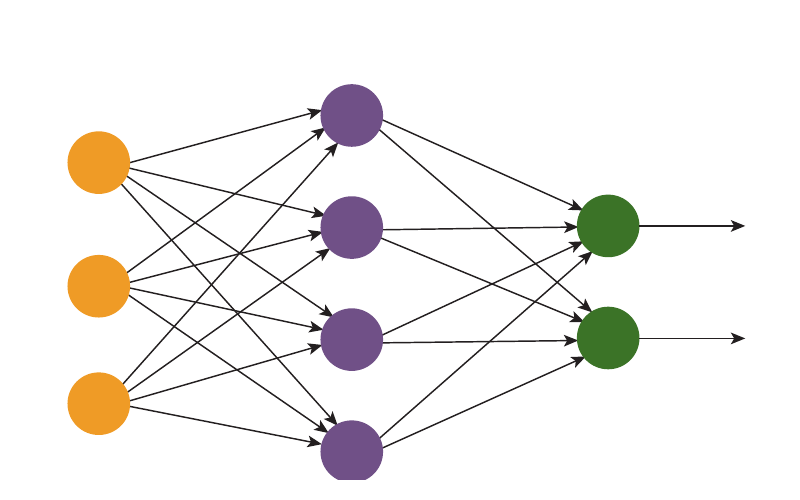
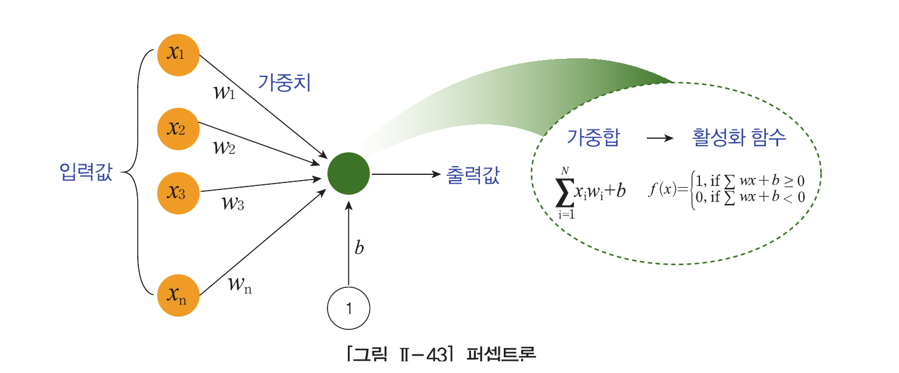
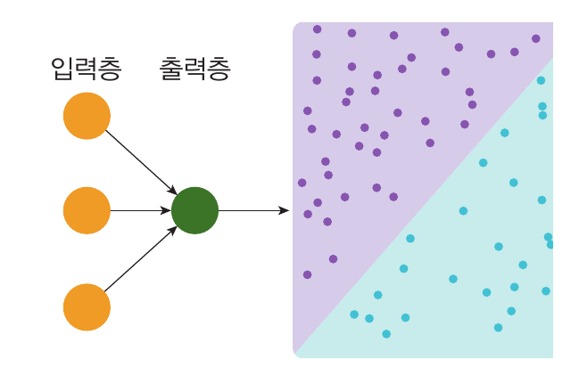
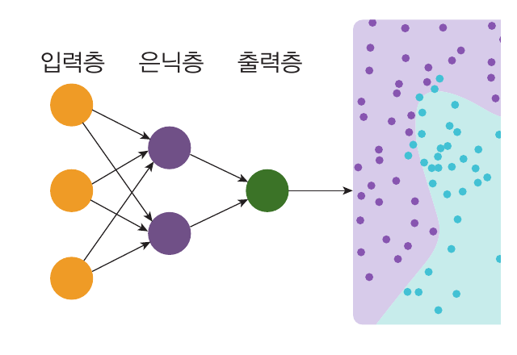
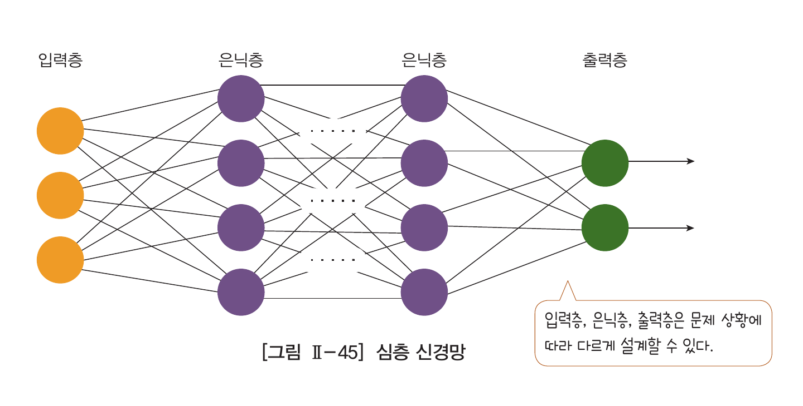

뉴런의 구성
인간의 뇌는 수많은 뉴런(신경 세포)으로 구성되며, 뉴런은 시냅스로 연결된다.

01
p.126
핵심 속성을 누가 찾아내는지에 주목해 두 학습 방법을 비교해 보자.

02
p.127
인간의 뇌가 정보를 인식하고 학습하는 방식을 모방한 인공지능 모델
인간의 뇌는 수많은 뉴런(신경 세포)으로 구성되며, 뉴런은 시냅스로 연결된다.

뉴런은 입력 신호를 받아 가중치를 적용하고, 계산한 출력 신호를 다른 뉴런에 전달한다.

03
p.127
다수의 신호를 입력받아 하나의 신호로 출력하는 인공 신경망의 가장 기본적인 구성 요소
입력값과 가중치를 곱하고 이 값들을 합산한다.
가중합이 활성화 함수에서 임곗값을 넘으면 1, 그렇지 않으면 0을 출력한다.

04
p.128
입력층과 출력층 사이에 은닉층을 추가해 비선형 문제를 해결한다.

선형 문제
하나의 직선으로 나눌 수 있는 문제를 해결한다.

비선형 문제
여러 퍼셉트론이 상호 작용해 복잡한 문제를 해결한다.
05
p.128
은닉층을 여러 개 쌓은 깊은 신경망으로 복잡한 패턴을 학습한다.

많은 수의 은닉층을 가진 신경망
심층 신경망으로 복잡한 패턴을 학습하는 분야
06
p.130~131
딥러닝은 이미지·언어·음성의 패턴을 학습하고 새로운 콘텐츠를 만드는 데 활용된다.
이미지와 영상에서 객체와 특성을 파악
사람의 언어를 컴퓨터가 이해하고 처리
음성 입력을 텍스트로 변환하여 처리
새로운 형태의 콘텐츠를 생성하거나 변환
1 / 1